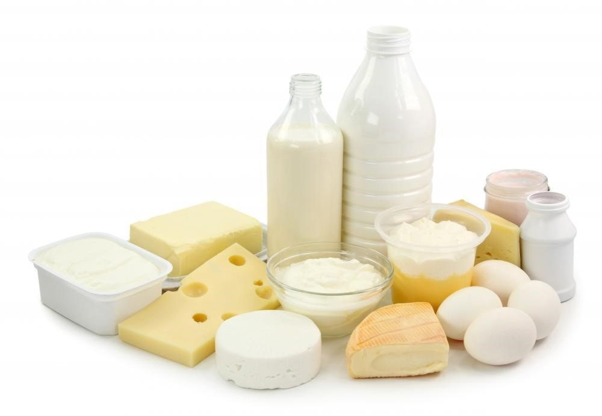

Catálogo de Produtos
Frutas

Maçãs, Bananas, Laranjas e muito mais.
Vegetais

Cenouras, Alfaces, Tomates e muito mais.
Laticínios
Leite, Queijo, Iogurte e muito mais.
Um e-commerce que conecta pequenos agricultores com consumidores urbanos, oferecendo produtos frescos e orgânicos.
Somos o EcoVerde, uma empresa comprometida em promover o acesso a produtos orgânicos frescos e de alta qualidade para consumidores urbanos. Nosso objetivo é estabelecer uma ponte entre pequenos agricultores locais e você, oferecendo uma variedade de alimentos que são cultivados de forma sustentável e respeitosa com o meio ambiente.
Nossa missão é incentivar um estilo de vida saudável e consciente, apoiando práticas agrícolas que preservam a biodiversidade e a saúde do solo. Trabalhamos lado a lado com agricultores que compartilham dos nossos valores de transparência, qualidade e responsabilidade social.
Além de fornecer produtos frescos, também nos dedicamos a educar nossos clientes sobre os benefícios de uma alimentação orgânica e oferecemos receitas inspiradoras para aproveitar ao máximo os ingredientes que entregamos em sua porta.
Maçãs, Bananas, Laranjas e muito mais.
Cenouras, Alfaces, Tomates e muito mais.
Leite, Queijo, Iogurte e muito mais.
Agricultor especializado em frutas tropicais.
Agricultora focada em vegetais folhosos.
Produtor de laticínios orgânicos.
Receba uma cesta semanal com uma seleção dos melhores produtos orgânicos diretamente na sua porta.

Escolha o melhor dia e horário para receber seus produtos frescos.

Uma deliciosa salada feita com quinoa, vegetais frescos e temperos orgânicos.

Um refrescante suco feito com folhas verdes, maçã e gengibre.

Um smoothie nutritivo feito com uma mistura de frutas frescas e iogurte.